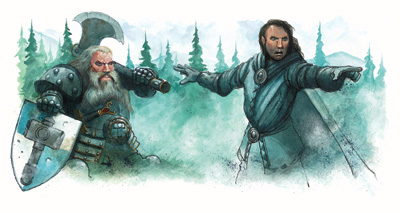

|
近卫骑士

少而孤傲，近卫骑士是致力于恢复没落的骑士精神的勇士。近卫骑士看到周围世界的道德日益败坏，伦理行为不断堕落。如同圣武士，近卫骑士也坚持严格的行为规范，包括荣誉、诚实、正直、英勇。与圣武士不同的是，近卫骑士的首要职责是追寻信条以及建立于此之上的理想，而不是效忠某个神或神圣的组织。近卫骑士从所有的举止中显示出自己的理想，并贯彻于所有的行动之中，无论那有多么艰难。
许多近卫骑士拥有一个荣誉并忠诚的出身，例如其他的骑士阶级或为某位君王服务。圣武士与前圣武士是最普遍的近卫骑士，信仰守序神祗（例如圣·库斯伯特与海若尼斯）的牧师或寻求崇高目标的战士通常会认同近卫骑士的规章制度。其他职业的成员，尤其是施法者，缺乏追寻这条道路的兴趣以及热情。
大多数NPC近卫骑士独自四处云游，寻找值得守护的人或者理想的效忠对象。即使只有一面之交或仅仅是同僚之谊，近卫骑士之间的合作也无比强大－－无论他们出身于男爵，卑微的臣仆，或者是武士，他们都对其他近卫骑士倍感亲切并且憧憬着美好的日子。
生命骰：D１０
必要条件：
角色必须符合以下的要求才有资格成为一名近卫骑士。
阵营:绝对守序或者守序善良。
基本攻击加值：＋５。
技能：交涉６级，知识（贵族和王权）４级，骑乘６级。
专长：重甲熟练，顺势斩，骑乘战斗，强力顺势斩，猛力攻击。
本职技能：
近卫骑士的本职技能如下（括号中为该技能的关键属性）：交涉（魅力），威吓（魅力），知识（贵族和王权）（智力），骑乘（敏捷），侦察（感知）。
升级可得到的技能点数：２＋智力修正值。
等级 基本攻击加值 强韧检定 反射检定 意志检定 特殊能力
１ ＋１ ＋０ ＋０ ＋２ 护卫＋２，闪耀化身
２ ＋２ ＋０ ＋０ ＋３ 奋尽全力＋２，钢铁意志
３ ＋３ ＋１ ＋１ ＋３ 至高顺势斩
４ ＋４ ＋１ ＋１ ＋４ 护卫＋３
５ ＋５ ＋１ ＋１ ＋４ 奋尽全力＋３
６ ＋６ ＋２ ＋２ ＋５ 铁面无私 １
７ ＋７ ＋２ ＋２ ＋５ 护卫＋４
８ ＋８ ＋２ ＋２ ＋６ 奋尽全力＋４
９ ＋９ ＋３ ＋３ ＋６ 铁面无私 ２
１０ ＋１０ ＋４ ＋３ ＋７ 奋尽全力＋５，审判一击
本职特点：
武器与装甲熟练：近卫骑士能熟练使用塔盾。
护卫（特异能力）：在每一轮的开始，当近卫骑士身边５尺之内有一名拥有较少生命骰数的同伴时，近卫骑士便可以将２点的防御等级转移给此名同伴（这将使近卫骑士的的防御等级降低同样的数值）。１级起，最多可转移的数值每三级增加１点。
闪耀化身（超自然能力）：近卫骑士无论从肉体还是精神上都是崇高理想的化身。所有在其１０尺内的同伴在对抗恐惧效果的豁免检定时都可以获得＋４士气加值。当近卫骑士被麻痹、失去意识或陷入其他无助状态时，他的同伴失去该加值。
奋尽全力（特异能力）：近卫骑士的崇高目标通常需要很多特别的努力奋斗。２级起，近卫骑士在进行任意技能检定时获得加值，每天一次。必须在检定前宣布使用此能力。２级起，此加值每三级增加１点。
钢铁意志（特异能力）：２级时，近卫骑士获得钢铁意志专长。
至高顺势斩（特异能力）：３级起，近卫骑士进行顺势斩或强力顺势斩时可以移动５尺距离。
铁面无私（特异能力）：６级时，近卫骑士获得每轮进行一次额外的借机攻击的能力（如同拥有战斗反射特技以及＋１的敏捷调整值）。９级时，近卫骑士可以每轮进行两次额外的借机攻击。此能力与战斗反射特技叠加。
审判一击（超自然能力）：如果一名１０级近卫骑士的同伴陷入无助或失去意识，近卫骑士便可以对打倒盟友的生物进行一次审判一击。此时，攻击检定须加上魅力调整值（若为正值），如果命中，将造成１０点额外的伤害值。
近卫骑士每日可使用审判一击的次数等于他的魅力调整值（至少一次），但每轮最多使用一次。近卫骑士可以对同一名敌人进行多次审判一击。
兼职信息：一名圣武士或武士在成为一名近卫骑士后，将能继续提升他的初始职业。
前近卫骑士
近卫骑士若主动的违背信条，并且没有适当的理由，将失去所有超自然职业能力，而且将不能继续提升近卫骑士等级。
THE CODE OF THE KNIGHT PROTECTOR
A knight protector must be of lawful neutral or lawful good alignment，and must a
dhere to the order's code of conduct.
Support:The order supports its own.A knight protector can expect to receive ro
om and board，as well as amount with appropriate gear，from the order for as long a
s he remains in its ranks and adhere to the Code.
The Code:
Courage and enterprise in obedience to the order.
Defense of any mission unto death.
Respect for all peers and equals;courtesy to all lessers.
Combat is glory;battle is the true test of self－worth;war is the flowering of
the chivalric ideal.
Personal glory above all in battle.
Death before dishonor.
近卫骑士的规章：
近卫骑士必须是绝对守序或者守序善良阵营，并且坚持遵守组织的行为准则。
赡养：组织自给自足。在职的近卫骑士只要遵守规章制度就可以从组织内获取食宿以及通常的配备。
信条：
－－－－－－－－－－－
－－－－－－－－－－－
尊重他人，对弱者保持谦逊.
崇尚战斗；战争是自身价值的真正考验；战争使骑士精神日趋成熟。
战斗中荣誉高于一切。
荣誉即吾命。
近卫骑士范例
玛萨茵:
种族:矮人
圣武士6/近卫骑士10
挑战等级:16
中型人形生物
生命骰:(6d10+12)+(10d10+20)
生命值:120
先攻权调整值:+1
速度:20英尺
防御等级:26(接触11,措手不及25)
基本攻击加值:+16
擒抱:+21
攻击:+24近战(1D10+7/x3,+2矮人重斧)或+18远程(1d8+6/x3,+1复合长弓[+5力量加值])
全回合攻击:+24/+19/+14/+9近战(1D10+7/x3,+2矮人重斧)或+18/+13/+8/+3远程(1d8+6/x3,+1复合长弓[+5力量加值])
特殊攻击:审判一击 每日3次,破邪斩 每日2次,至高顺势斩,驱散不死生物 每日6次
特性:勇气圣光,善良圣光,奋尽全力 +4,伤害减免 3/-;护卫 +5;侦测邪恶,神恩,神佑,矮人特性,圣疗,铁面无私 2,移除疾病,闪耀化身,专用坐骑.
阵营:守序善良
豁免:强韧+13,反射+9,意志+13
属性:力量 21,敏捷 13,体质 14,智力 12,感知 12,魅力 16.
技能:交涉+26,知识(贵族与皇室)+5,骑乘+20,察言观色+6,侦查+11
特技:顺势斩,强力顺势斩,钢铁意志,灵活移动,骑乘战斗,猛力攻击,武器专攻(矮人重斧).
审判一击(Su):如果某名玛萨茵的同伴陷入无助状态或者失去意识,她便可以对对击倒盟友的生物进行一次审判一击,该次攻击获得+3的攻击鉴定奖励并造成10点的额外伤害.
破邪斩(Su):玛萨茵可用普通攻击进行破邪斩.她在攻击鉴定上得到3点奖励,并造成6点额外的伤害.对非邪恶生物使用破邪斩没有特殊效用,并记入当日使用次数.
至高顺势斩(Ex):玛萨茵进行顺势斩或强力顺势斩时可以移动5尺距离.
驱散不死生物(Su):如同3级的牧师.
勇气圣光(Su):玛萨茵对恐惧免疫.在她10尺内的同伴在对抗恐惧效果的豁免检定时都可以获得+4士气加值.
善良圣光(Ex):玛萨茵拥有与6级牧师相同的善良圣光.
奋尽全力(Ex):玛萨茵每天有一次机会,可在进行任意技能检定时获得+4加值.
护卫(Ex):玛萨茵可以将5点AC转移给5尺之内的同伴,同时自己受到相同的减值.
侦测邪恶(Sp):随时施展,如同"侦测邪恶"法术.
神恩(Su):玛萨茵在豁免鉴定上获得+3的加值(已记入上述数据).
神佑(Ex):玛萨茵对疾病免疫,包括类似尸腐症和lycanthropy(狂犬病?)这些魔法造成的疾病.
矮人特性(Ex):抗冲撞和摔绊的属性检定具有+4加值;对抗毒素,法术和类法术能力的豁免检定具有+2加值;对兽人和地精类生物的攻击检定具有+1加值;对抗巨人时防御等级具有+4加值;在进行与岩石和金属有关的估价和手艺检定时具有+2加值.
圣疗(Su):玛萨茵每日可医疗18点生命值.
铁面无私(Ex):玛萨茵每轮可以进行2次额外的借机攻击.
移除疾病(Sp):效果如同"移除疾病"法术,每周一次.
闪耀化身(Su):所有在玛萨茵10尺内的同伴在对抗恐惧效果的豁免检定时都可以获得+4士气加值.当玛萨茵被麻痹,失去意识或陷入其他无助状态时,她的同伴失去该加值.(显然.这项能力与勇气圣光重复了)
专用坐骑(Sp):玛萨茵的专用坐骑是一匹重型战马(参见3E中文PHB45页.似乎3E.3R这里没有区别),与普通的重型战马相比,它拥有2个额外的生命骰,4点天生防御,1点力量加值和精通反射闪避能力.玛萨茵与坐骑之间存在着感情连接,并可以与之共享法术和豁免鉴定.她每日可用一个整轮动作召唤她的坐骑,持续10个小时.
已备圣武士法术(2个;豁免DC=11+法术等级):一级法术-祝福武器,防护邪恶.
物品:+3精金全身铠甲,+2重型钢盾,+2矮人重斧,1复合长弓[+5力量加值],巨力腰带+4,健康护符+4,魅力斗篷+2.
[CW]武士的组织之近卫骑士
近卫骑士
与其说是一个组织，倒不如说是一群有共同的行为准则的个人，近卫骑士力图维护和追求荣誉感、骑士道以及大无畏的精神。近卫骑士自认为是古老的骑士组织的最后的成员，然而他们的身份却各不相同。通常，他们来自于已消亡的骑士组织或者立志行善却未达成目标的没落贵族。担任近卫骑士的人们期望着"better days"的复苏，而且他们信守古骑士道,，并坚信可以通过以身作则来加速修复社会的疾痛。
近卫骑士没有正式的等级制度以及审核程序。与大多数骑士组织不同，宣称自己是一命近卫骑士只需要遵守共同的行为准则，而无须定期服役、接受考验或宣誓效忠。近卫骑士们严于律己，但是，一名配不上这个头衔的骑士最终会发现自己与那些认为虚伪就是违背美德的严重罪行的虔诚的成员存在着冲突。一名近卫骑士若在无意中，或者在自认为行善的过程中触犯了信条，可以通过承诺完成一件委托或由资深骑士所指派的任务来补偿自己的错失。主动违背信条而没有适当理由的近卫骑士将不再被承认是组织的一员，通常会被其他近卫骑士回避，甚至被蔑视、通缉。
成员范例
乔瑞斯·威尔克曾经是荣耀而崇高的圣武士的一员。随着时间的流逝，他渐渐认为他的同伴过于偏好仁慈而非秩序，不再热衷于与道德的腐败以及精神上的缺陷作斗争。乔瑞斯为此而感到左右两难。直到他接到命令为一位当地的公爵效命，然而据他所知，此人品行不端，于是他拒绝服从，但乔瑞斯对他的上司谎报了原因。尽管不明真相，他的上司们一致认为这是一个谎言（视作藐视权威）并将乔瑞斯驱逐出他们的组织。在追寻新的人生信条的路途中，乔瑞斯遇到一名近卫骑士，他使乔瑞斯了解这群骑士的信仰。现在，乔瑞斯四处搜寻道德上的腐败与衰退，并与之斗争。他团结与他拥有相同目标的 PCs 并且骄傲的对每一个感兴趣的人介绍他的新伙伴以及他们的使命。
乔瑞斯.威尔克
种族:男性半精灵
前圣武士6/近卫骑士3
挑战等级:8
中型人形生物
生命骰:(6d10+12)+(3d10+6)
生命值:72
先攻权调整值:+1
速度:20英尺
防御等级:25(接触12,措手不及24)
基本攻击加值:+9
擒抱:+11
攻击:+12/+7近战(1d8+3/19-20,+1长剑,或1d8+2/x3,精制长枪)
特殊攻击:至高顺势斩
特性:奋尽全力 +2,护卫 +2,闪耀化身
豁免:强韧+8,反射+4,意志+7
阵营:守序中立 属性:力量 14,敏捷 13,体质 14,智力 10,感知 11,魅力 16.
*Ad Hoc CR adjustment due to lack of paladin abilities.
技能:交涉+13,收集信息+5,知识(贵族与皇室)+4,聆听+1,骑乘+7,搜索+1,侦察+5;
特技:顺势斩,强力顺势斩,钢铁意志(B),猛力攻击,骑乘战斗,跺踏.
至高顺势斩(Ex):乔瑞斯进行顺势斩或强力顺势斩时可以移动5尺距离.
奋尽全力(Ex):乔瑞斯每天有一次机会,可在进行任意技能检定时获得+2加值.
护卫(Ex):乔瑞斯可以将2点AC转移给5尺之内的同伴,同时自己受到相同的减值.
闪耀化身(Su):所有在乔瑞斯10尺内的同伴在对抗恐惧效果的豁免检定时都可以获得+4士气加值.当乔瑞斯被麻痹,失去意识或陷入其他无助状态时,他的同伴失去该加值.
物品:+1全身铠甲,+2重型钢盾,+1长剑,保护戒指+1,精制长枪,重型战马以及链衬骑甲,27金币. |